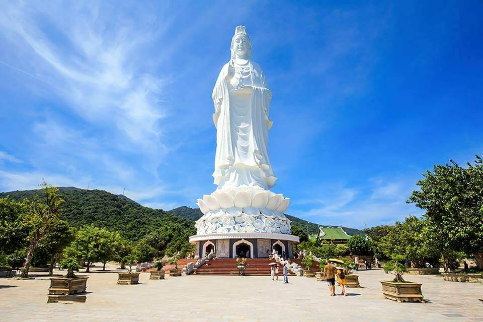
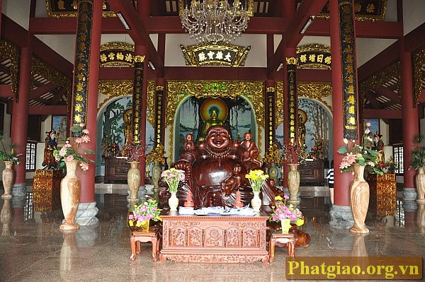
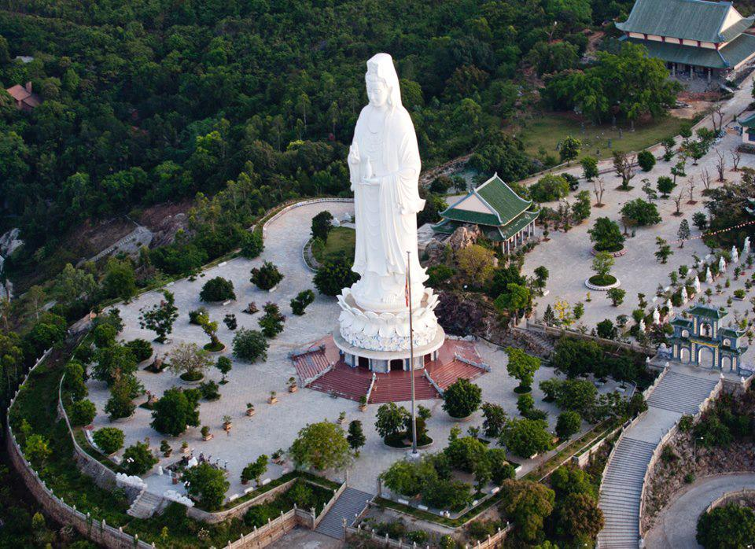
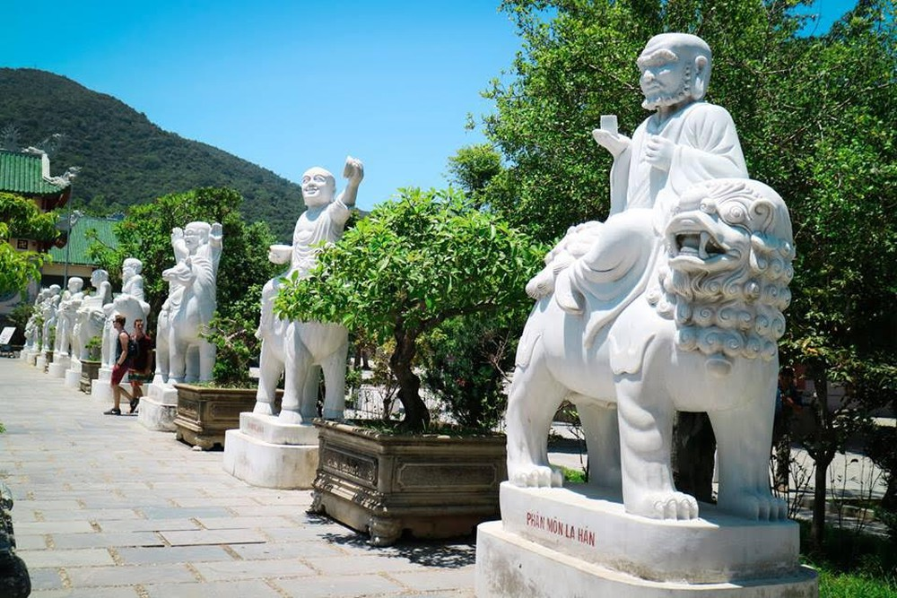

Chùa Linh Ứng
Địa Điểm Du Lịch Tâm Linh
Chùa Linh Ứng Bãi Bụt Sơn Trà là ngôi chùa lớn nhất ở thành phố Đà Nẵng cả về quy mô (rộng khoảng 20ha) lẫn kiến trúc nghệ thuật. Đây là ngôi chùa nằm trong quần thể du lịch bán đảo Sơn Trà được xây dựng với sự kết hợp hài hòa giữa nét hiện đại và truyền thống của chùa Việt, hiện đang là điểm du lịch mới của thành phố biển xinh đẹp này.

Nổi bật nhất tại chùa Linh Ứng chính là Tượng Phật Bà Quan Thế Âm trên sân chùa Linh Ứng với chiều cao 67m, đường kính tòa sen 35m, tương đương tòa nhà 30 tầng đang được xem là bức tượng Phật cao nhất ở Việt Nam hiện nay. Người dân bán đảo Sơn Trà kể lại rằng, vào thời vua Minh Mạng (nhà Nguyễn, thế kỷ XIX) có một pho tượng Phật không biết từ đâu trôi dạt về bãi cát nơi đây. Cho đó là điềm lành, họ lập nam thờ tự và từ đó cả khu vực sóng yên biển lặng, dân chài yên ổn làm ăn suốt một thời gian dài. Khu bãi cát mà pho tượng phật dạt về từ đấy được mang tên Bãi Bụt (nghĩa là Cõi Phật giữa chốn trần gian) cũng chính là nơi dựng lên chùa Linh Ứng ngày nay.
Chùa Linh Ứng Bãi Bụt tựa lưng vào đỉnh Sơn Trà vững chãi, mặt nhìn ra biển Đông bao la, xa xa bên tả là đảo Cù lao Chàm án ngự, phía hữu là ngọn Hải Vân ngăn che với dòng Hàn giang hiền hòa thơ mộng. Sơn Trà còn là nơi giao hòa giữa biển trời với núi sông trong khoảng không trầm lặng, với tiếng vỗ rì rầm của biển cả và lời kể về một câu chuyện thuở xưa: Vào thời vua Minh Mạng, dân chài ven biển nơi đây đã phát hiện một tượng Phật trên bãi cát, bằng lập am thờ tự. Và rồi, Ngài Quán Thế Âm cứu khổ cứu nạn xuất hiện cứu người vượt vòng trầm luân, kể từ đó sóng yên biển lặng, dân chài yên ổn làm ăn, từ đó nơi đây có tên gọi là Bãi Bụt, hay còn gọi là Cõi Phật giữa chốn trần gian. Chùa Linh Ứng Bãi Bụt được đặt viên đá đầu tiên vào ngày 19 tháng 06 năm 2004 âm lịch, sau 6 năm xây dựng ngày 30 tháng 07 năm 2010 (nhằm ngày 19/6 năm Canh Dần) Chùa được chính thức khánh thành. Theo ban đại diện chùa Linh Ứng Bãi Bụt: Chùa xây dựng trên cơ sở phát nguyện của Thượng tọa Thích Thiện Nguyện khởi tâm vận động bà con phật tử gần xa. Đồng thời được các cơ quan ban ngành và lãnh đạo thành phố cấp đất xây dựng trong một quần thể du lịch mới hình thành của Đà Nẵng. Chùa Linh Ứng Bãi Bụt được xem là một công trình in đậm dấu ấn phát triển của Phật giáo Việt Nam ở thế kỷ XXI mà còn là nơi hội tụ của linh khí đất trời và lòng người. Trải bao năm tháng thăng trầm của thời gian và lịch sử, được sự hộ trì, động viên khích lệ của Chư tôn thiền đức, sự cho phép và tạo mọi điều kiện của lãnh đạo thành phố, sự ủng hộ của đồng bào phật tử, chùa Linh Ứng-Bãi Bụt qua 6 năm xây dựng, đến nay đã sừng sững trên núi Sơn Trà như minh chứng cho sự kết hợp giữa Đạo pháp và Dân tộc, làm nên một công trình in đậm dấu ấn phát triển của Phật giáo Việt Nam ở thế kỷ XXI, dâng lên tưởng niệm Quốc Tổ Hùng Vương, liệt vị Tổ tiên nhân kỷ niệm Đại lễ 1.000 năm Thăng Long Hà Nội.
Chùa Linh Ứng - Bãi Bụt hiện được xem là ngôi chùa lớn nhất ở thành phố Đà Nẵng cả về quy mô cũng như kiến trúc nghệ thuật. Ngôi chùa mang một phong cách hiện đại kết hợp với tính truyền thống vốn có của chùa chiền Việt Nam, với mái ngói uốn cong có hình rồng, những trụ cột vững chắc được bao quanh bởi những con rồng uốn lượn rất tinh xảo. Điện chính có sức chứa lớn, là nơi trang nghiêm và thanh tịnh nhất. Chính giữa là tượng Phật Bổn Sư Thích Ca Mô Ni, bên phải là Quan Thế Âm Bồ Tát, và bên trái là Tam Tạng Phật, bốn vị Thần Long Hộ Pháp cùng 18 vị La Hán được sắp xếp theo một quy luật, bảo vệ cho chính điện.
Đặc biệt, tại chùa Linh Ứng Bãi Bụt có tượng Phật Quan Thế Âm được xem là cao nhất Việt Nam (cao 67m, đường kính tòa sen 35m, tương đương tòa nhà 30 tầng). Tượng đứng tựa lưng vào núi, hướng ra biển, đôi mắt hiền từ nhìn xuống, một tay bắt ấn tam muội, tay kia cầm bình nước cam lồ như rưới an bình cho những ngư dân đang vươn khơi xa. Trên mão tượng Quan Âm có tượng Phật Tổ cao 2m. Trong lòng tượng có 17 tầng, mỗi tầng đều có bệ thờ tổng cộng 21 bức tượng Phật với hình dáng, vẻ mặt, tư thế khác nhau, gọi là “Phật trung hữu Phật”.
Từ trên mười bảy tòa tháp này có thể nhìn được toàn bộ cảnh thành phố, núi rừng và biển đảo Sơn Trà một cách hoàn hảo nhất. Phóng tầm mắt ra xa hơn, núi Ngũ Hành Sơn cùng bãi biển bao quanh bởi bờ cát dài trắng mịn đã hiện ra tỏ tường. Sáng sớm khi nắng lên hay lúc chiều về, bầu trời xanh trong cùng gió trời mát mẻ sẽ mang lại cho con người một ấn tượng tuyệt vời mà hiếm nơi nào có được. Về đêm, đứng từ cổng chùa nhìn xuống, du khách còn nhìn thấy một vệt sáng dài của ánh đèn thành phố hệt như một vệt sao băng trên bầu trời đêm lung linh huyền ảo.
Có thể nói, chùa Linh Ứng Bãi Bụt được xây dựng trong một quần thể du lịch mới hình thành của thành phố - Khu du lịch bán đảo Sơn Trà, ở một địa điểm đắc địa nhất khu vực này, ngôi chùa đã trở thành nơi chiêm bái, sinh hoạt, học tập của tăng ni, phật tử, đồng thời cũng là nơi ngoạn cảnh của du khách bốn phương, một điểm du lịch tâm linh hấp dẫn của thành phố Đà Nẵng, là nơi hội tụ linh khí đất trời và lòng người.
Một điều đặc biệt nữa của chùa Linh Ứng là cho dù đứng ở bất kỳ nơi nào trong thành phố cũng đều dễ dàng nhìn thấy tượng Phật Bà Quan Thế Âm đứng tựa lưng vào núi, mặt hướng ra biển với đôi mắt hiền từ, một tay bắt ấn tam muội, tay kia cầm bình nước cam lộ. Cũng chính vì nằm ở địa thế cao nhất của bán đảo Sơn Trà, ngay từ cổng chùa du khách đã có thể đưa tầm mắt hướng ra xa toàn bộ đô thị trẻ Đà Nẵng. Còn nếu đổi hướng nhìn về phía biển, Mỹ Khê sẽ trong tầm nhìn với cả bãi biển nước trong xanh cùng bờ cát dài trắng mịn, chạy vòng cung theo con đường dưới chân núi của bán đảo Sơn Trà.
Trong khuôn viên chùa, ở lối vào chính điện là nơi trưng bày pho tượng Phật Bổn Sư Thích Ca Mâu Ni cùng pho Phật Bà Quan Thế Âm, Tam Tạng Phật. Bốn vị Thần Long Hộ Pháp và 18 vị La Hán được sắp xếp hai hàng hai bên đường vào chính điện. Mỗi vị là hiện thân của những cung bậc cảm xúc khác nhau “hỉ, nộ, ái, ố” của con người khiến khung cảnh ở đây trở nên sinh động vô cùng. Du khách nào từng đặt chân đến chùa Linh Ứng đều không khỏi trầm trồ khi chiêm ngưỡng những pho tượng La Hán được khắc họa tinh tế, sắc cạnh nhưng không kém phần mềm mại này.
18 pho tượng đá La Hán là một trong những nét đặc sắc nhất của chùa Linh Ứng được tạc lên bởi nghệ nhân Nguyễn Việt Minh (Hội trưởng Hội làng nghề Non Nước) với nguyên liệu đá trắng nguyên khối được mang về từ Thanh Hóa.Chính điện của chùa Linh Ứng được xây theo phong cách hiện đại kết hợp với kiến trúc truyền thống vốn có của chùa Việt với mái ngói uốn cong. Những trụ cột vững chắc của chính điện cũng được bao quanh bởi hình những con rồng uốn lượn, chạm trổ rất tinh xảo. Cả một quần thể những hạng mục như Chánh điện, nhà Tổ, Giảng đường, Tăng đường và vườn tượng La Hán… đều được xây dựng quy mô và hoành tráng ở chùa Linh Ứng.
Điểm đến đặc biệt nhất mà bất cứ du khách nào khi tới thăm chùa Linh Ứng đều muốn trải nghiệm đó là khám phá bên trong tòa tháp 17 tầng của pho tượng Phật Bà Quan Thế Âm. Với vị trí nằm trong quần thể du lịch mới hình thành trên bán đảo Sơn Trà, chùa Linh Ứng giờ đây không chỉ là một địa điểm du lịch tâm linh mà còn là không gian hội tụ linh khí của đất trời và lòng người đối với những du khách từng một lần ghé thăm thành phố biển Đà Nẵng Đường lên ngôi chùa trên núi này thật dễ dàng nhờ có một con đường tráng nhựa rộng rãi men theo sườn đồi đưa du khách lên tận nơi.Chúc bạn có chuyến tham quan thú vị tại địa điểm du lịch tâm linh này.